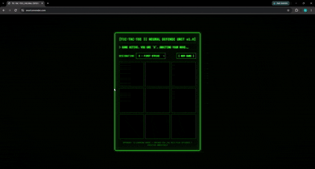
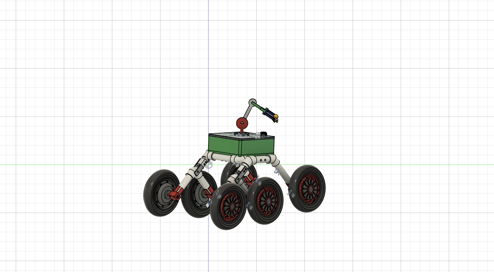
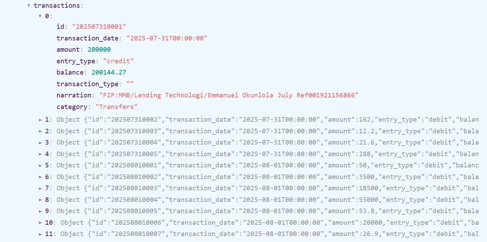
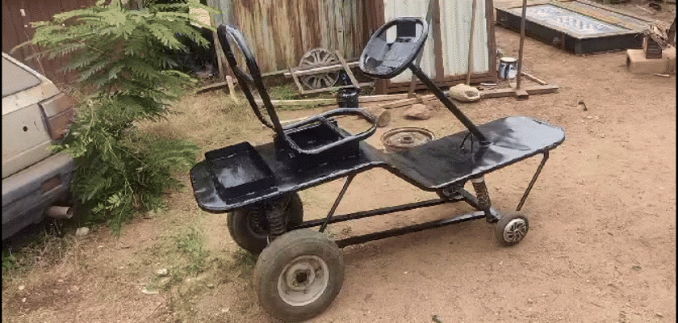
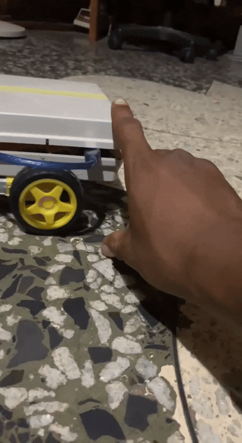
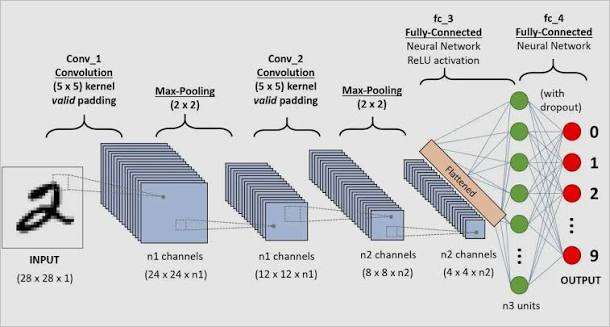
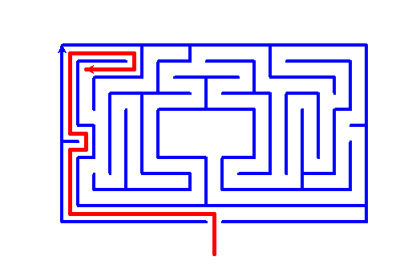

Research Projects and Regular Projects
XNORL: Reinforcement Learning Tic-Tac-Toe

Built a browser-playable tic-tac-toe game backed by a FastAPI service and a Q-learning agent trained through self-play. The agent canonicalizes board symmetries so rotated and reflected positions share learned values.
Design of a Mars Rover with a Robot Arm

Designed a Mars rover on Fusion 360 with a robot arm mounted on the top, and a camera fitted on the front for reconnaissance, using PVC pipes as the main structural material, making a cheap and lightweight alternative to the more expensive options. It is still an ongoing project expected to be fitted with autonomous navigation capabilities.
Multimodal Transaction Classifier & Credit Custom Model

Built at Lendsqr: a model combining transaction narration, entry type, and date features to classify bank transactions. Derived borrower debt-to-income metrics, plus a custom credit model to estimate loan repayment probability that helped lower non-performing loans.
Electric Go-Kart with Gyroscope-Assisted Steering

Designed and fabricated a microcontroller-based electric go-kart with wireless, gyroscope-assisted steering input to improve vehicle stability and control — part of RAIN's research program.
Self-Balancing Robot & Mini Cannon Launcher

Built a two-wheeled self-balancing robot with Arduino, gyroscope sensors, and PID control, and a separate compressed-air projectile launcher to study projectile dynamics and system safety.
NLP Chatbot & Medical Image Classification

Developed NLP models and deep-learning pipelines (TensorFlow/Keras) for a chatbot and for medical image classification on malaria and breast-cell datasets.
Maze Searcher & CO2 Emissions Visualization

Freelance builds: a maze rendering/solver app using BFS and DFS with Python Turtle and PIL, and an interactive visualization of global CO2 emissions (1751–2014) using Processing and GeoPy for geocoding.